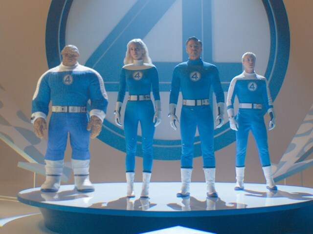
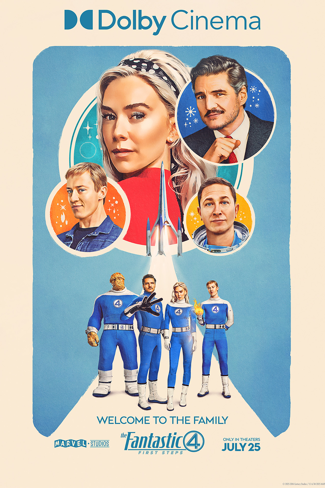

This movie has been a needed one for a long time because these are really the first true Fox film characters finally back in the Marvel universe. The vibe you get from this movie is just thinking if they are gonna make it and survive Galactus. He is out for the son of two of the members to change place and stop being the destroyer. Their plan of making him teleport to the end of the universe was really their only one they could do because of how powerful he is.